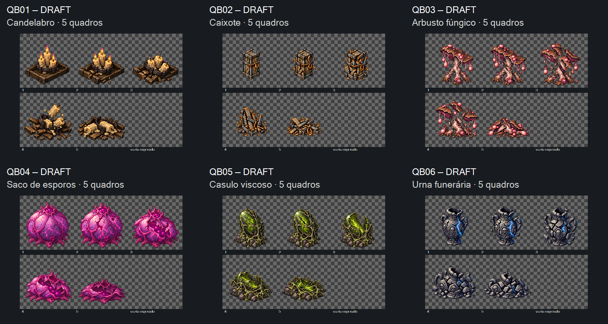

Seis fontes, 30 quadros, direção visual das seis sequências aceita pelo dono em 16/10/2026. Prévia de células nativas, sem alinhamento/normalização final. As seis rupturas executam uma vez e mantêm o último quadro. Use Repetir para comparar a transição inteira. A velocidade é de inspeção, não configuração aprovada de runtime.
Manifesto · Medições e hashes · Prompts usados · Entrega para Claude
Pendências técnicas: desvios de base, materiais com alfa próximo de 255 e resíduos de alfa baixo fora da silhueta. Não há admissão no jogo. As poses e sua direção visual podem ser avaliadas por código; a galeria não declara as sequências prontas para runtime.

Checkpoint visual concluído. Aceite das seis sequências registrado; preparação técnica permanece pendente. QB01 v01, QB02 v03, QB03 v02, QB04 v01, QB05 v02, QB06 v02. As fontes anteriores estão preservadas. Animação em jogo, ancoragem definitiva, alfa final e integração ficam com a frente de Claude. Nenhum playtest realizado por esta galeria.